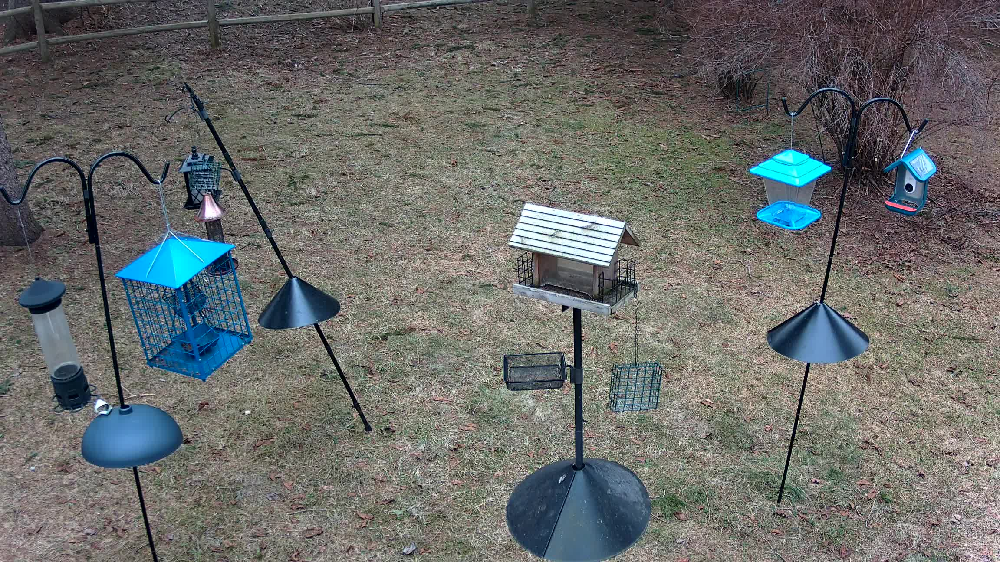

Backyard Birds
A photo journal of birds visiting my feeders in Palermo, NY

I maintain bird feeders and a bird bath in my backyard and have set up a live camera pointing at the feeders. The feed is powered by a Reolink 4K POE camera and streamed via Restreamer running in my home lab. AI-powered species identification runs continuously via BirdNET-Pi, which listens for bird calls and identifies species in real time.
Species Journal
Blue Jay
Mohawk-wearing, noisy punks — frequent visitors to the backyard feeders. Usually showing up in groups of 4 or more. Indiscriminate about food choice, hitting all seed and suet types.
View Photos & Notes →Hairy Woodpecker
Often confused with the Downy Woodpecker, the Hairy is a few inches larger. Primarily visits the suet feeder, usually appearing separately from its mate.
View Photos & Notes →White-Breasted Nuthatch
Skittish little bird that spends most of its time in the small pine near the feeders — darting down only for a quick snack before retreating to the tree.
View Photos & Notes →About This Project
This bird journal is part of a larger technology project combining live streaming, home lab infrastructure, and AI. Read about the full setup in the Enhancing Birdwatching with AI Technology article.
Location: Palermo, NY (Central New York) — Oswego County